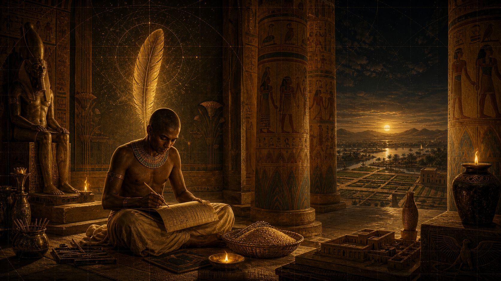
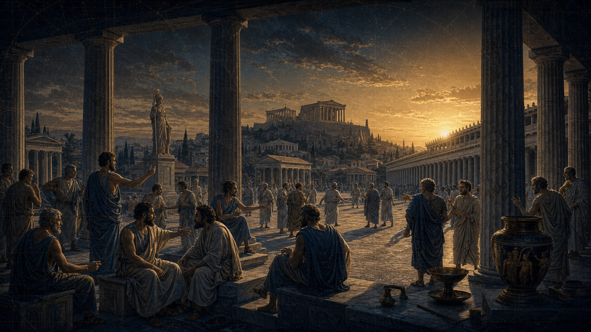
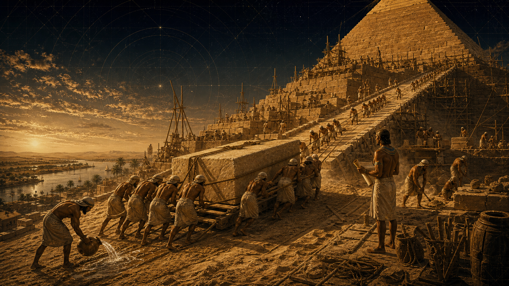
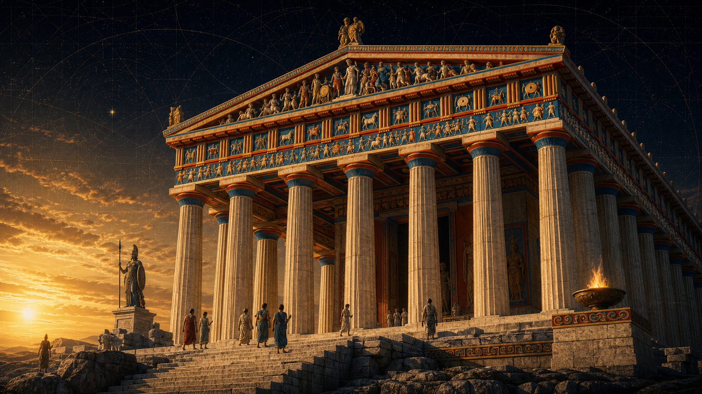

I. Le socle : Géographie et naissance de l'État
- La Géographie comme destin : L'unité du Nil face à la fragmentation de l'Égée.
- Structure géo-politique : L'État-Nation centralisé (Égypte) contre le réseau des cités-États (Grèce).
Dossier XXII · Antiquité comparée
L'affrontement des géants. D'un côté l'Égypte : la Maât, l'ordre cosmique, la pérennité du Pharaon. De l'autre la Grèce : le Logos, l'Agôn, la démocratie de l'Agora. « Le duel des modèles : deux visions du monde que tout oppose, et qui pourtant ont façonné les fondations de notre pensée moderne. »
« Là où le scribe égyptien fige la vérité sur le papyrus pour assurer la pérennité de l'État, le citoyen grec monte sur l'Agora pour réinventer l'État par la force de sa parole. »
Le fil conducteur
Deux géants nés au 4ᵉ millénaire, deux choix de société radicalement opposés : la centralisation absolue pour durer face au chaos (l'Égypte de la Maât) contre la fragmentation en cités-États, terreau de la rivalité et de l'innovation (la Grèce du Logos). Ce dossier confronte le Nil et l'Égée, le Pharaon et le Citoyen, la pyramide et le Parthénon — puis démonte les mythes qui entourent leurs pierres. La transcription du live est conservée mot pour mot, et chaque fait a été vérifié.
Égypte unifiée — la plus ancienne structure étatique unifiée (Narmer / Ménès).
Imhotep — la pyramide à degrés de Djoser : l'État qui bâtit l'éternité.
Solon réforme Athènes — la loi débattue contre l'arbitraire.
Le Parthénon — sous Périclès : le manifeste de la cité et de la raison.
Mort de Cléopâtre VII — la fin de l'Égypte antique comme État souverain.
Pourquoi ces civilisations ne sont pas une suite chronologique mais deux trajectoires : la certitude du Nil contre la fragmentation de l'Égée.
Deux « logiciels » de pouvoir : la Maât (l'ordre cosmique, la pérennité administrative) et le Logos / l'Agôn (la raison, le débat, la citoyenneté).
Démonter l'intox — pyramides « extraterrestres », esclaves bâtisseurs, « perfection » du Parthénon : partout, chercher la méthode, pas la magie.
Visualisation · Le duel des modèles
Touchez un thème pour confronter les deux modèles, face à face. Une grille de lecture du live — la formule de chaque civilisation, pas une réduction académique.
Synthèse fidèle au déroulé : « l'Égypte est l'art de la stabilité, la Grèce est l'art de la friction ». Les nuances vérifiées sont dans les encadrés « Anti-intox » des chapitres.
Introduction & sommaire
Duel des Modèles – Égypte vs Grèce
Introduction
Bienvenue à toutes et à tous. Aujourd'hui, nous ne nous contentons pas de comparer deux cartes ou deux chronologies ; nous allons confronter deux visions du monde que tout oppose, et qui pourtant ont façonné les fondations de notre pensée moderne.
D'un côté, l'Égypte : le royaume de la Maât, où la stabilité, l'ordre cosmique et la pérennité du Pharaon assurent l'équilibre de l'univers depuis des millénaires. Une société où la loi est transcendante, immuable, héritée du divin.
De l'autre, la Grèce : le laboratoire de la cité, où naissent le Logos, la démocratie et l'Agôn — cette soif de compétition et de débat qui pousse l'humain à questionner, critiquer et réinventer sans cesse les règles du vivre-ensemble.
Mais avant de plonger dans ce duel, il est crucial de dissiper une confusion classique : contrairement aux idées reçues, ces civilisations ne sont pas une simple suite chronologique. Ce sont des trajectoires distinctes, nées au 4e millénaire, ayant fait des choix sociétaux radicalement opposés : le choix de la centralisation absolue et de l'unité pour durer face au chaos, contre celui de la fragmentation en cités-États, terreau fertile de la rivalité et de l'innovation.
Comment ces deux géants se sont-ils regardés ? Qu'est-ce qui, dans leur rencontre, a nourri la fascination des uns et l'incompréhension des autres ? En évitant les clichés sur le "choc des civilisations", nous allons analyser, de manière sourcée et rigoureuse, ce que cet affrontement nous révèle sur l'humanité, l'État et le pouvoir.
C'est le duel des modèles : Égypte contre Grèce.
Bienvenue dans L'Empire Contre-Intox.
Sommaire
Lexique de travail (À intégrer en fin de script ou en incrustation)


Le premier modèle

Au live
Commençons par l'Égypte. Pour bien comprendre ce royaume, il faut oublier le terme "Pharaon" tel qu'on le voit dans les films. À l'origine, Per-aâ, la "Grande Maison", désigne l'institution, le siège du pouvoir, pas l'homme.
L'Égypte, ce n'est pas une aventure politique, c'est une ingénierie du temps. Le Nil est leur métronome : prévisible, bienfaisant, il impose une certitude. Le scribe, avec ses Medou Netjer (paroles divines), n'est pas un simple comptable, c'est le technicien qui maintient l'ordre. Ici, l'administration est une prière : on mesure, on stocke, on prévoit, pour que la Maât — cet équilibre cosmique — ne soit jamais rompue. Le roi, ce gardien de la Maât, n'est pas là pour légiférer, il est là pour garantir que le soleil se lève demain. C'est un modèle fondé sur la pérennité absolue. »
Le Modèle Égyptien – La force de l'institution
1. L'illusion du "Pharaon" : Une métonymie historique
2. La Maât : La "technologie" de la stabilité
3. Le Scribe : Le système nerveux de l'État
4. Synthèse: La longévité comme preuve
"On demande souvent : 'Qui était le Pharaon ?'. C'est une question qui contient un piège. En réalité, ce qui est fascinant, ce n'est pas le nom de l'homme sur le trône, mais la force de l'institution. Alors que la Grèce invente la rupture politique et le débat, l'Égypte a inventé la pérennité administrative. Ils ne cherchaient pas à innover, ils cherchaient à durer."
Ce qui est acté vs Ce qui est débattu (Pour une rigueur scientifique)
Anti-intox · vérifié
« Per-aâ » désigne bien l'institution avant de désigner l'homme : l'emploi du mot pour la personne du roi n'apparaît qu'au Nouvel Empire (XVIIIᵉ dynastie, ~XVᵉ s. av. J.-C.). Parler de « Pharaon » pour l'Ancien Empire est donc bien anachronique. L'unification vers ~3100 av. J.-C. (± 150 ans) est la valeur standard, attribuée à Narmer / Ménès — mieux vue comme un processus que comme un événement unique. Sources : Britannica « Pharaoh » ; World History Encyclopedia.
Le second modèle

Transition
Mais face à cette "machine à durer" égyptienne, une autre civilisation choisit une voie radicalement différente. Là où l'Égypte cherche la certitude dans l'unité et la répétition, la Grèce va chercher l'innovation dans la fragmentation et le conflit. Là où le scribe égyptien fige le monde sur le papyrus pour ne pas qu'il bouge, le citoyen grec monte sur l'Agora pour le transformer par la parole. C'est là que le duel commence.
Le Modèle Grec : Le laboratoire de l'humain (Le Modèle Expérimental)
1. Les débuts : La rupture par la géographie
2. Le socle du modèle : Le Logos et l'Agôn
3. La structure : L'Agora comme centre nerveux
4. Pourquoi ce modèle fascine ?
Anti-intox · vérifié
Nuance décisive sur le « tirage au sort » : à Athènes, la plupart des magistratures et le Conseil des Cinq-Cents étaient bien tirés au sort, mais les dix stratèges (généraux) étaient élus au vote — et rééligibles. C'est précisément par cette charge que Périclès a gouverné (une quinzaine de mandats consécutifs, 443–429 av. J.-C.) : l'exception qui explique son ascendant. Sources : Britannica « sortition » ; Livius « strategos ».
Pour comprendre comment ces systèmes tournent, il faut regarder les hommes qui les ont incarnés. En Égypte, Ramsès II et Imhotep nous montrent que la force d'un État repose sur l'union parfaite entre l'autorité sacrée et la précision administrative. En Grèce, avec Périclès et Solon, on découvre un tout autre moteur : la conviction que la justice n'est pas un ordre divin, mais une règle que des citoyens libres doivent inventer et débattre chaque jour. Attardons-nous quelques minutes sur des hommes.
I. Égypte : Les piliers de la "Grande Maison"
Ramsès II (XIXe dynastie, v. 1279-1213 av. J.-C.)
Imhotep (IIIe dynastie, v. 2650 av. J.-C.)
II. Grèce : Les architectes de la Cité
Périclès (Ve siècle av. J.-C.)
Solon (VIe siècle av. J.-C.)
Synthèse (Le "Pitch" du modèle Grec)
"Si l'Égypte est l'art de la stabilité, la Grèce est l'art de la friction. Là où le Pharaon garantit l'ordre pour éviter le chaos, le citoyen grec provoque le chaos pour tester l'ordre. Ils ne cherchent pas à figer le monde dans l'éternité, ils cherchent à comprendre les mécanismes de la cité pour mieux les réinventer chaque matin. La Grèce, c'est l'invention du 'Et si on faisait autrement ?'."
Ce qui est acté vs Ce qui est débattu (Rigueur historique)
"L'Égypte nous a légué l'État et l'idée que le pouvoir doit être garant d'une harmonie durable. La Grèce nous a légué le doute, le débat et l'idée que le pouvoir est une responsabilité que nous devons exercer ensemble. Aujourd'hui, nos démocraties modernes sont nées de ce duel permanent entre le besoin d'ordre égyptien et le besoin de liberté grecque.
I — Le socle
A. La Géographie comme destin : Le contraste originel
"Tout commence par une question de topographie. Pour comprendre pourquoi ces deux civilisations ont divergé, il faut regarder la carte.
En Égypte, la géographie est un cadeau. Le Nil n'est pas qu'un fleuve, c'est un métronome. Ses crues sont annuelles, prévisibles, presque disciplinées. Cette régularité a créé un état d'esprit unique : la certitude. Le désert, tout autour, agit comme une enceinte protectrice. Le résultat ? Une unité territoriale naturelle, un ruban fertile où tout le monde dépend du même cycle. L'Égypte ne s'est pas construite dans le chaos, elle s'est organisée pour maintenir cette abondance.
En Grèce, c'est tout l'inverse. Le relief est un puzzle : des montagnes arides qui morcellent le territoire, des îles isolées, et une mer omniprésente qui pousse à la navigation. Ici, la nature ne dicte pas une unité, elle impose la fragmentation. Chaque vallée, chaque île devient un monde à part. Ce morcellement géographique, c'est le berceau de l'indépendance."
B. Structure géo-politique : État-Nation contre Cités-États
Cette contrainte géographique a forgé deux systèmes politiques diamétralement opposés.
D'un côté, l'Égypte s'impose comme un État-Nation unifié dès le 4e millénaire. Une centralisation absolue, pyramidale. Pourquoi ? Parce que gérer le Nil demande une logistique qui dépasse le village. Il fallait une autorité capable de coordonner l'irrigation sur des centaines de kilomètres. Le pouvoir est ici un garant de la cohésion : si la tête de l'État faiblit, c'est tout le système hydraulique qui menace de s'effondrer.
De l'autre, la Grèce invente le réseau de cités-États. Ici, pas d'autorité centrale écrasante. Chaque cité est un laboratoire politique autonome. La survie ne dépend pas de l'obéissance à un souverain lointain, mais de la capacité de la cité à se défendre, à négocier, ou à rivaliser avec sa voisine. C'est ce terreau de fragmentation qui rend l'innovation politique non seulement possible, mais nécessaire."
Point de rigueur (pour éviter les clichés)
II — Le pouvoir
A. La pyramide égyptienne : L'ordre par l'institution
Une fois le cadre géographique posé, regardons comment on gouverne. En Égypte, le pouvoir est une affaire de verticalité absolue. Mais attention au piège des mots : quand nous disons 'Pharaon', nous commettons un anachronisme pour l'Ancien Empire. Les Égyptiens parlaient de Per-aâ, la 'Grande Maison'. Le souverain n'est pas juste un homme fort, il est le garant en chef de la Maât, cet équilibre cosmique universel. Si le roi faiblit, c'est le chaos (Isfet) qui reprend ses droits.
Pour faire tourner cette immense machine, le roi s'appuie sur deux piliers :
D'abord, le Vizir. C'est le chef d'orchestre, le bras droit exécutif qui traduit la volonté sacrée en chantiers concrets, en justice et en décrets.
Ensuite, le Scribe. Ne le voyez pas comme un simple gratte-papier. Le scribe est le détenteur des Medou Netjer, les paroles divines (les hiéroglyphes). En mesurant les champs après la crue et en comptant les grains dans les silos, le scribe fait un acte religieux : il administre la mesure pour éviter le chaos. En Égypte, une bureaucratie efficace est la preuve tangible que la Maât est respectée."
B. Le laboratoire grec : La liberté par le débat
Traversons la Méditerranée et changeons radicalement d'axe. En Grèce, on quitte la verticalité pour inventer l'horizontalité politique. L'épicentre du pouvoir n'est plus un palais inaccessible, c'est l'Agora. Cette place publique, d'abord dédiée au commerce, devient le cœur battant de la cité (Polis). C'est là que le sujet égyptien s'efface pour laisser la place au Citoyen.
Le pouvoir n'est plus hérité du divin, il est conquis par le Logos (la parole rationnelle) et affûté par l'Agôn (la compétition). Pour le Grec, la loi n'est pas immuable, elle s'appelle le Nomos : une règle humaine, débattue, votée et modifiable. Pour éviter qu'une minorité ne confisque le pouvoir, des cités comme Athènes vont jusqu'à institutionnaliser le tirage au sort et la rotation des charges. Le conflit d'idées n'est pas perçu comme un danger de mort pour la société, mais comme le moteur même de sa survie."
Quand on parle de 'démocratie' à Athènes, il faut être précis : c'était une démocratie directe, certes, mais exclusive. Elle ne concernait que les citoyens de sexe masculin, représentant environ 10 à 15 % de la population totale. Ce système de liberté politique reposait sur le travail des femmes, des métèques (étrangers) et d'une main-d'œuvre servile nombreuse. En somme, c'était une démocratie pour les uns, rendue possible par le travail des autres.
La phrase de contraste (Charnière du chapitre)
"Alors que le scribe égyptien fige la vérité sur le papyrus pour assurer la pérennité de l'État, le citoyen grec monte sur l'Agora pour réinventer l'État par la force de sa parole."
Le point de rigueur historique (Acté vs Débattu)
Anti-intox · vérifié
La part des citoyens (mâles adultes) est estimée entre ~10 % et ~20 % de la population selon les périodes et les sources — « 10 à 15 % » est dans la fourchette basse mais recevable. Précision de vocabulaire : les lois de Solon étaient nommées thesmoi ; le mot Nomos comme terme standard de « loi » ne s'impose qu'à la fin du Vᵉ siècle — « substituer le Nomos à l'arbitraire » est un raccourci pédagogique juste sur le fond. Sources : World History Encyclopedia « Athenian Democracy » ; Britannica « Solon ».
III — L'influence au féminin
A. Égypte : La souveraineté incarnée
En Égypte, la royauté est un socle divin. La femme, lorsqu'elle accède au pouvoir, ne "déroge" pas aux règles, elle devient le réceptacle de la légitimité.
Hatchepsout (XVIIIe dynastie, v. 1479-1458 av. J.-C.)
Cléopâtre VII (Dynastie lagide, 69-30 av. J.-C.)
B. Grèce : Le pouvoir par l'exception
En Grèce, la femme est assignée au foyer (l'Oikos). Son influence est donc souterraine, intellectuelle ou liée à des statuts d'exception.
Aspasie de Milet (Ve siècle av. J.-C.)
Gorgo de Sparte (Ve siècle av. J.-C.)
Transition vers le religieux (Ce qui fait le pont)
"Alors que ces femmes ont dû briser des plafonds de verre — qu'il s'agisse de devenir Pharaon en Égypte ou d'influencer l'agora en Grèce — elles ont toutes trouvé dans le sacré un espace de légitimité. En Égypte, la femme est l'épouse du Dieu ; en Grèce, elle est la prêtresse indispensable aux rituels. C'est dans cette sphère qu'elles pouvaient enfin s'exprimer publiquement."
Ce qu'il faut retenir
Anti-intox · vérifié
Thoutmosis III est bien le beau-fils de Hatchepsout (et son neveu). L'influence d'Aspasie sur la guerre de Samos est une accusation antique (Plutarque, comédie ancienne), traitée par les historiens comme un procédé de dénigrement — pas un fait établi ; la présence de Socrate à son cercle est solide, celle de Phidias plausible. La « tablette » déchiffrée par Gorgo (Hérodote, VII, 239) était une tablette de bois recouverte de cire. Sources : World History Encyclopedia (Aspasia, Gorgo) ; Hérodote, Histoires.
IV — Spiritualité
En Égypte comme en Grèce, les divinités ne sont pas de simples listes de noms ; elles sont le miroir de ce que chaque civilisation attend de la réalité.
A. L'Égypte : La religion comme "Maintenance Cosmique"
En Égypte, le divin est une "mécanique". Le monde est une horloge, et les dieux en sont les rouages essentiels.
B. La Grèce : La religion comme "Miroir de l'humain"
En Grèce, le divin est un "miroir" où se reflètent les passions humaines.
C. Synthèse : Le tableau comparatif
| Point de comparaison | Égypte (La Machine) | Grèce (Le Miroir) |
|---|---|---|
| Nature des dieux | Forces naturelles / Fonctions | Personnalités / Passions |
| Objectif du culte | Maintenir l'ordre (Maât) | Négocier avec le destin |
| Rôle dans la cité | Garantie de survie | Modèle de comportement |
| Évolution | Éternellement identiques | Subjectifs et changeants |
"Alors que l'Égypte regarde ses dieux pour comprendre comment maintenir l'équilibre du monde, la Grèce regarde les siens pour comprendre les limites de l'ambition humaine. En Égypte, on prie pour que rien ne change ; en Grèce, on prie pour trouver la force de faire face aux changements. C'est ce besoin d'ordre ou de mouvement que l'on retrouve jusque dans leur architecture."
Pour notre projet L'Empire Contre-Intox, il est crucial de ne pas présenter les divinités comme une simple liste de noms, mais comme des outils de compréhension du monde. Les dieux sont le miroir de ce que chaque civilisation attend de la réalité.
Voici comment, on a essayé de structurer cette partie pour maintenir la tension entre le "Modèle Égyptien" (pérennité) et le "Modèle Grec" (agitation).
I. Égypte : Les Dieux comme forces de la Nature
En Égypte, le divin est une "mécanique". Le monde est une horloge, et les dieux en sont les rouages.
II. Grèce : Les Dieux comme forces humaines
En Grèce, le divin est un "miroir". Les dieux ont des défauts, des désirs, des jalousies. Ils sont une projection de l'humanité sur le ciel.
La phrase de transition
"Alors que l'Égypte regarde ses dieux pour comprendre comment maintenir l'équilibre du monde, la Grèce regarde ses dieux pour comprendre les limites de l'ambition humaine. En Égypte, on prie pour que rien ne change ; en Grèce, on prie pour trouver la force de faire face aux changements."
Ce qui est acté vs Débattu (Pour la rigueur)
La mise en relation : Fonctions et Correspondances
1. Le garant de l'ordre : Maât (Égypte) vs Zeus (Grèce)
2. La sagesse et la stratégie : Thot (Égypte) vs Athéna (Grèce)
3. Le cycle et la vie : Isis/Osiris (Égypte) vs Déméter/Perséphone (Grèce)
La synthèse : "La connexion des modèles"
On pourrait croire que ces mondes sont opposés, mais en réalité, ils cherchent à résoudre les mêmes angoisses fondamentales : comment dompter le chaos ? comment assurer la pérennité ?
Les Égyptiens ont répondu par la stabilité rituelle : leurs dieux sont des forces de la nature qu'on stabilise. Les Grecs ont répondu par la gestion humaine : leurs dieux sont des partenaires complexes avec lesquels on négocie. Les divinités égyptiennes et grecques ne sont pas opposées, elles sont deux manières différentes de traduire, dans la pierre et le rite, le besoin universel d'ordre et de sens."
Anti-intox · vérifié
Le pouvoir des « Épouses du Dieu » d'Amon est réel, mais son apogée se situe à la fin de la Troisième Période intermédiaire / Basse Époque (XXVᵉ–XXVIᵉ dynasties), même si le titre est plus ancien. La porosité Égypte-Grèce évoquée (culte d'Isis) est bien documentée pour l'époque hellénistique. Sources : Wikipedia « God's Wife of Amun » ; B. Bryan (Johns Hopkins).
V — La matérialité
A. L'Architecture égyptienne : Le gigantisme pour l'éternité
B. L'Architecture grecque : L'humain au centre
Synthèse: "La pierre qui fige vs La pierre qui accueille"
"Si l'on regarde les ruines, on comprend tout : les temples égyptiens étaient construits pour que les dieux y habitent éternellement, écrasant le visiteur sous la puissance du sacré. Les espaces grecs, eux, ont été construits pour que les hommes s'y rencontrent, y débattent et y décident de leur propre destin. D'un côté, le monument qui immortalise ; de l'autre, l'espace qui libère."
Ce qui est acté vs Débattu (Pour la rigueur)
Anti-intox · la « blancheur classique » est un mythe
Vérifié : les temples grecs (et le Parthénon) étaient peints de couleurs vives — bleu égyptien, rouge (hématite/ocre), vert — décelées par analyses de pigments in situ. La « blancheur » est un état d'usure, pas l'état d'origine. Source : Heritage (MDPI, 2022), DOI 10.3390/heritage5020042.
L'intervention de Zalex
1. Les Pyramides et l'alignement stellaire (Le point de départ)
Question au public
Nous avons cette fascination pour l'Égypte qui aligne ses pierres sur les étoiles. Est-ce que tu peux nous expliquer pourquoi, pour un Égyptien, bâtir un temple ou une pyramide, ce n'est pas seulement construire un bâtiment, mais c'est littéralement 'fixer' le ciel sur la Terre ?
Et pour nous expliquer, nous avons notre ami Zalex avec nous.
Zalex, peux-tu nous expliquer comment les Égyptiens observaient le ciel sans instruments optiques, simplement par le suivi des transits stellaires ?
Mais avant, il est essentiel de souligner que les Égyptiens pratiquaient une astronomie de position basée sur l'observation à l'œil nu, sans instruments d'optique (lunettes ou télescopes). Voici les détails techniques et les instruments simples qu'il peut évoquer pour illustrer leur précision remarquable :
Zalex, pour ton intervention sur l'astronomie, n'hésite pas à préciser qu'ils n'avaient pas de télescopes. Ils utilisaient simplement la Merchet et le Bay pour traquer le passage des étoiles au méridien. C'est cette patience d'observation, répétée sur des décennies, qui leur a permis d'aligner leurs pyramides avec une précision que nous avons encore du mal à reproduire aujourd'hui, prouvant que, pour eux, le ciel était le plan de construction de la Terre."
1. Les instruments d'observation (La "technologie" de précision)
2. La méthode : Une astronomie de "transits"
3. Pourquoi c'est important pour le live
Cette précision n'était pas "scientifique" au sens moderne, mais rituelle et architecturale :
Pourquoi cet alignement était crucial pour relier le Pharaon au cycle éternel des astres ?
L'alignement astronomique n'était pas une simple prouesse technique ; il était crucial pour la survie spirituelle et politique de l'Égypte antique pour les raisons suivantes :
En résumé, pour les Égyptiens, construire en alignement avec les étoiles, ce n'était pas décorer, c'était faire fonctionner le monde. C'était la garantie physique que l'État, le Pharaon et la nature restaient alignés sur le plan divin.
2. Est-ce valable pour les temples ?
Oui, c'est tout à fait valable, mais avec une nuance importante sur la fonction :
Cela avait-il autant d'importance pour les grecs ?
Pour les Grecs, la réponse est non, ce n'était pas pareil, et c'est justement ce qui révèle la différence fondamentale entre les deux modèles que nous étudions.
Voici pourquoi l'utilisation des colonnes en Grèce est radicalement différente de l'alignement stellaire égyptien :
L'espace public en Grèce, contrairement à l'espace sacré égyptien, est la traduction physique du Logos (la raison) et de la citoyenneté. Voici comment le présenter dans ton déroulé pour marquer la différence :
L'Espace Public grec : Le théâtre du politique
L'Égypte bâtit pour le ciel : L'espace public égyptien (les cours des temples) est un espace de soumission à l'ordre divin, où l'individu se sent petit face à la pérennité du cosmos.
Ce qui est acté : L'Agora grecque a inventé le concept moderne d'espace public comme lieu de délibération politique, une rupture totale avec les modèles de pouvoirs centralisés du Proche-Orient.
Ce qui est débattu : Certains historiens discutent de la place réelle des femmes dans ces espaces publics : bien qu'exclues officiellement, les récentes études montrent qu'elles participaient indirectement à la vie de la cité par le biais de réseaux religieux ou de mécénats, bien que l'architecture elle-même semble avoir été pensée par et pour les hommes citoyens.
Si l'Égypte a utilisé l'architecture comme un instrument de mesure du ciel pour garantir l'éternité, la Grèce a utilisé l'architecture comme un instrument de mesure de l'homme pour garantir la liberté et le débat
La pierre égyptienne fige l'éternité, la pierre grecque libère la parole.
Anti-intox · vérifié
La précision d'orientation de Khéops est réelle : moins de ~4 minutes d'arc par rapport au nord vrai. En revanche, la méthode exacte reste une hypothèse : visée d'étoiles circumpolaires (Spence, Nature 2000) ou visée solaire à l'équinoxe (gnomon). Nuance d'instrument : c'est le Bay qui porte la fente en V ; le Merchet porte le fil à plomb — et les exemplaires conservés sont postérieurs aux pyramides (usage inféré). Sources : Magli & Belmonte (arXiv) ; Science Museum Group.
Anti-intox — le grand chantier

Pour L'Empire Contre-Intox, démonter les mythes sur la construction des pyramides est une nécessité. Pour rester rigoureuse, il faut distinguer ce qui est documenté archéologiquement (les preuves) de ce qui est spéculatif (les théories de "conspiration" ou de "technologie perdue").
Voici une structure factuelle pour aborder ce sujet pour ce live, on a mis en avant la maîtrise humaine plutôt que le mystère :
1. La réalité archéologique : Une gestion de projet colossale
2. Comment contrer l'intox (Les points de rigueur)
Pour contrer les récits sensationnalistes, on va utiliser ces trois axes de réponse :
3. Synthèse : La "Victoire de l'Intelligence humaine"
"Pourquoi l'idée que les Égyptiens auraient eu de l'aide extérieure est-elle si tenace ? Parce qu'on refuse d'admettre qu'une civilisation sans moteur thermique ait pu, par la seule force de l'organisation sociale, de la patience et de la maîtrise géométrique, bâtir l'éternité. Prétendre qu'ils n'en étaient pas capables, ce n'est pas protéger le mystère, c'est effacer leur génie."
Pourquoi c'est important ?
GRANDE MISE AU POINT !
Concernant le mythe de la participation des esclaves à la construction des pyramides, voici les éléments factuels pour contrer cette "intox" :
En résumé, on peut affirmer que la construction des pyramides est le résultat d'une adhésion nationale à un projet étatique et non le fruit d'une exploitation servile. C'est la preuve de la puissance de l'administration égyptienne capable de nourrir, loger et coordonner des milliers de personnes sur une longue période.
Anti-intox · vérifié & précisé
Solide : le Journal de Merer (papyrus de la Mer Rouge, Wadi el-Jarf, découvert par Pierre Tallet) est le plus ancien papyrus inscrit et documente le transport du calcaire de Toura vers Gizeh ; les fouilles de Mark Lehner (village de Heit el-Ghurab) prouvent une main-d'œuvre nourrie et soignée. Nuances : la « corvée pendant la crue » est le modèle interprétatif dominant (mélange d'équipes permanentes qualifiées et de rotations), pas une certitude ; le type de rampe reste débattu ; Hérodote parle de travail forcé par rotation — pas d'« esclaves » au sens moderne, glissement amplifié ensuite par la tradition biblique et le cinéma. Sources : Tallet 2017 (IFAO) ; Lehner & Hawass 2017 ; PRL 2014 (sable humidifié).
Le saviez-vous · résilience sismique
Une étude de 2026 (Scientific Reports) mesure les fréquences fondamentales de la Grande Pyramide entre 2,0 et 2,6 Hz : très différentes de celles du sol (~0,6 Hz), elles lui évitent l'amplification par résonance et lui confèrent une résilience sismique. Prudence : les auteurs y voient une propriété structurelle émergente, pas une conception antisismique intentionnelle. Source : ELGabry et al. (2026), Sci. Rep. 16, DOI 10.1038/s41598-026-49962-6.
Visite guidée

Au live
Et si nous vous emmenions visiter le Parthéon ? Vous nous suivez ?
Après avoir exploré le gigantisme égyptien, tournons-nous vers le Parthénon. C'est l'incarnation même du modèle grec : une architecture qui ne cherche pas à écraser l'individu sous le poids de l'éternité, mais à sublimer la citoyenneté et la raison humaine.
1. La construction : Une prouesse de précision et d'innovation
Le Parthénon, construit entre 447 et 432 av. J.-C. sous l'impulsion de Périclès, n'est pas seulement un temple, c'est le manifeste architectural de la cité d'Athènes.
2. Les colonnes : Une architecture à "l'échelle de l'homme"
Contrairement aux temples égyptiens qui séparent le sacré du profane par des murs épais et des salles obscures, le temple grec s'ouvre sur la cité.
3. La signification politique et citoyenne
Le Parthénon est dédié à Athéna, déesse de la stratégie et de la sagesse,
La construction du Parthénon, tout comme celle des pyramides, est le résultat d'une organisation humaine remarquable, bien que reposant sur des bases sociétales très différentes de celles de l'Égypte.
Voici les éléments clés sur sa construction et sa main-d'œuvre
1. La construction : Une prouesse de précision et d'innovation
2. La main-d'œuvre : Des citoyens et des artisans libres
Contrairement au modèle égyptien qui mobilisait une main-d'œuvre paysanne lors des crues du Nil, la construction du Parthénon repose sur une organisation différente.
Synthèse
Pour contrer l'intox, insistons sur ce point :
"Si les pyramides égyptiennes sont le produit d'une administration étatique qui mobilise la force collective, le Parthénon est le produit d'une cité qui investit dans l'excellence de ses citoyens et de ses artisans. Dans les deux cas, ce n'est pas la magie ou des aides extérieures qui ont construit ces merveilles, mais une organisation humaine méthodique, pensée et rigoureuse."
Pour enrichir la partie sur l'architecture grecque et expliquer visuellement les colonnes, voici des éléments de rigueur à intégrer. Les colonnes ne sont pas juste des supports, elles sont le "langage" de l'ordre grec.
1. L'Ordre Dorique : La robustesse et la sobriété
C'est l'ordre le plus ancien, le plus simple et le plus puissant, celui que l'on retrouve sur le Parthénon.
2. Les autres ordres pour compléter le panorama
Pour bien montrer la diversité du "laboratoire grec", on peut brièvement mentionner les deux autres :
Synthèse : "Le langage de la pierre"
"En Grèce, la colonne est un langage. Le Dorique du Parthénon, c'est la force tranquille de la cité. L'Ionique et le Corinthien, qui suivront, témoignent d'une évolution vers plus de raffinement et de complexité. Alors que le gigantisme égyptien cherchait à nous écraser, la colonne grecque, quel que soit son style, cherche à nous parler de mesure, de rythme et d'harmonie humaine."
Nous savons tout cela grâce à une combinaison de trois sources complémentaires qui permettent aux historiens et aux archéologues de reconstituer la vérité historique loin des mythes.
Voici comment nous obtenons ces connaissances :
En résumé, ce n'est pas par conjecture que nous connaissons ces détails, mais par le croisement des archives administratives de l'époque, des traités théoriques antiques et de l'analyse scientifique moderne des matériaux. C'est cette méthode rigoureuse que L'Empire Contre-Intox utilise pour déconstruire les théories conspirationnistes et redonner tout le crédit au génie des bâtisseurs grecs.
Anti-intox · vérifié
Datation précise : gros œuvre 447–438, décor sculpté jusqu'en 432 av. J.-C. Le Parthénon est majoritairement dorique mais intègre des éléments ioniques (la frise continue des Panathénées, quatre colonnes ioniques à l'arrière). Sur la main-d'œuvre : en grande partie des travailleurs libres (citoyens et métèques) rémunérés — mais des esclaves y ont aussi travaillé (parfois au même salaire journalier, d'après les comptes de l'Érechthéion). Sources : World History Encyclopedia « Parthenon » ; Haselberger (Ed.), Appearance and Essence, University of Pennsylvania Museum, 1999.
Point Info
Pour L'Empire Contre-Intox, ce point mathématique est crucial : il permet de transformer ce qu'on appelle souvent "mystère" en démonstration de génie rationnel.
Un même rapport régit la façade (~30,8 m sur ~69,5 m) et le rapport entre le diamètre d'une colonne et l'espacement des colonnes (entraxe). Des rapports commensurables (nombres entiers simples) : la beauté grecque comme équation rationnelle, non comme magie.
Le fameux (« phi ») : aucune source antique ne prouve son emploi délibéré au Parthénon. La position académique dominante : proportion rétroprojetée a posteriori, les Grecs raisonnant en rapports entiers (4:9). À ne pas confondre avec le ratio directeur, réel et documenté.
Synthèse
"On se demande souvent comment ils ont pu construire une telle perfection sans calculatrice. La réponse est simple : ils avaient une compréhension mathématique aiguë du monde. Le Parthénon est une équation de pierre. Chaque courbe, chaque inclinaison, chaque colonne a été calculée pour que l'œil humain perçoive l'harmonie parfaite. Ce n'est pas de la magie, c'est la victoire de la géométrie sur le chaos."
Pourquoi c'est important de le dire :
C'est cette rigueur mathématique qui, couplée à la logistique de construction, fait du Parthénon le chef-d'œuvre du modèle grec.
Les Mathématiques : Outils de la Perfection Architecturale
Les mathématiques sont-elles une science ?
Il est important de clarifier ce point :
"Quand on parle de mathématiques chez les Grecs, on ne parle pas de magie, on parle de Logos. Ils n'avaient pas de calculatrices, mais ils avaient la géométrie et la rigueur de la preuve. Les maths, ce n'est pas une opinion, c'est une science de la vérité qui a permis au Parthénon de traverser les siècles avec cette harmonie qui nous fascine encore aujourd'hui."
Anti-intox · les « corrections optiques » en débat
Les raffinements (colonnes inclinées, stylobate bombé, entasis) sont bien réels et mesurés. Mais l'idée qu'ils servent à « corriger des illusions d'optique » est débattue : un article récent (Goriely, arXiv:2510.16831, 2025) soutient que ces illusions supposées sont « inexistantes ou imperceptibles » ; une approche moderne insiste sur l'expérience d'un visiteur en mouvement. Sur le nombre d'or () : usage délibéré non prouvé, probablement rétroprojeté. Sources : Goriely 2025 (arXiv) ; plus.maths.org « golden ratio ».
VI — Conclusion
"En comparant l'Égypte et la Grèce, nous avons fait plus qu'un simple voyage historique ; nous avons confronté deux manières de penser notre place dans le monde.
Ce que nous retiendrons pour L'Empire Contre-Intox : L'histoire n'est jamais une succession de mystères insolubles, mais le récit d'une inventivité humaine constante. Lorsque nous voyons des structures colossales, des alignements stellaires ou des architectures parfaites, ne cherchons pas de magie ou d'aides extérieures ; cherchons la méthode, la patience et le génie de ceux qui, sans nos outils modernes, ont façonné notre héritage.
Aujourd'hui, nos démocraties modernes sont nées de ce duel permanent entre le besoin d'ordre égyptien et le besoin de liberté grecque. Comprendre ce passé, c'est mieux comprendre les équilibres précaires que nous devons maintenir chaque jour pour que notre propre cité continue de fonctionner et de progresser."
L'appareil critique
Ce dossier conserve la transcription du live mot pour mot. En parallèle, chaque affirmation et chaque chiffre ont été recoupés par des agents de recherche, puis consignés dans le Dossier « Les Sources » de l'Empire — avec verdict (confirmé, à nuancer, débattu) et source autoritative. Voici les références citées dans le live.
SOURCES
1. Sur la construction des pyramides (Égypte)
2. Sur le Parthénon (Grèce) et les "corrections optiques"
Il est important de noter une évolution majeure dans la recherche scientifique sur ce sujet :
Les plateformes comme JSTOR, Persée ou Google Scholar.
1. Sur l'Égypte antique (Pyramides et organisation)
Référence : Tallet, P. (2017). Les Papyrus de la Mer Rouge I : Le "Journal de Merer" (Papyrus Jarf A et B). IFAO.
Pourquoi l'utiliser : C'est le document scientifique incontournable pour prouver la gestion logistique et administrative de la construction de la pyramide de Khéops. Il met fin aux théories du "mystère" par la preuve écrite.
Référence : Lehner, M. (2015). Giza and the Pyramids: The Definitive History. Thames & Hudson.
Pourquoi l'utiliser : Mark Lehner est la référence mondiale sur le site de Gizeh. Ses fouilles démontrent scientifiquement l'organisation sociale, l'alimentation et les conditions de travail non serviles des bâtisseurs.
Référence : L'étude sur la réponse dynamique des structures égyptiennes aux séismes : "Electromagnetic properties of the Great Pyramid of Giza" (bien que le titre soit parfois sensationnaliste, les analyses structurelles internes sur les fréquences de résonance sont exploitées par des ingénieurs en génie parasismique).
2. Sur la Grèce antique (Parthénon et architecture)
Référence : Haselberger, L. (Ed.). (1999). Appearance and Essence: Refinements of Classical Architecture: Curvature. University of Pennsylvania Press.
Pourquoi l'utiliser : C'est une référence académique majeure qui analyse les raffinements du Parthénon (entasis, inclinaisons) sans tomber dans les mythes de la "correction optique parfaite".
Référence : Mantha, K. (2025). Reassessing the Optical Refinements of the Parthenon. Journal of Architectural History. (Recherche ce type d'articles récents sur les bases de données universitaires).
Pourquoi l'utiliser : Cet article récent illustre parfaitement la démarche scientifique de L'Empire Contre-Intox : on prend une idée reçue (les corrections optiques) et on la confronte aux nouvelles mesures laser et à la vision ambulatoire.
Référence : The Oxford Handbook of Greek and Roman Art and Architecture. Oxford University Press.
Pourquoi l'utiliser : Pour avoir une définition factuelle et indiscutable des ordres Dorique, Ionique et Corinthien, basée sur l'évolution historique des sites archéologiques.
Comment utiliser ces sources
Anti-intox · une référence à corriger
⚠️ La référence « Mantha, K. (2025). Reassessing the Optical Refinements of the Parthenon » citée dans le déroulé du live n'a pas pu être vérifiée (introuvable sur arXiv et les bases universitaires) : à ne pas citer comme source fiable. La vraie étude 2025 qui remet en cause les « corrections optiques » est : Goriely, A. (2025), « The illusion of illusions: There are no optical corrections in the Parthenon », arXiv:2510.16831 (DOI 10.48550/arXiv.2510.16831). C'est exactement le type de vérification que fait l'Empire Contre-Intox — y compris sur ses propres notes.
Pour aller plus loin
1. Terminologie Égyptienne
2. Terminologie Grecque
3. Terminologie Scientifique et Méthodologique
Ce dossier conserve mot pour mot la transcription du live. Du Nil à l'Agora, de la pyramide au Parthénon, un même fil : deux civilisations ont répondu à la même angoisse — dompter le chaos, assurer la pérennité — par deux logiciels opposés, la Maât et le Logos. Et partout où la légende crie au « mystère » ou à l'« aide extérieure », l'Empire Contre-Intox répond par la méthode, la patience et le génie humain. Nos démocraties modernes sont nées de ce duel permanent entre le besoin d'ordre égyptien et le besoin de liberté grecque.
Collectif
Un collectif pour remettre du contexte, de la méthode et du sens critique dans la mémoire collective. Ce dossier prolonge le live en donnant au public une version lisible, structurée et partageable du duel entre l'Égypte de la Maât et la Grèce du Logos.
Dossier réalisé parYmir & Lalie
Ymir & Lalie
Veritas omnia vincit